CERTUS CONTROL¶
CERTUS CONTROL software, which is required for the operation of CERTUS FLEX, should be installed on the user's PC.
Features¶
-
CERTUS CONTROL:
- Allows the execution of user protocols with CERTUS FLEX. CERTUS FLEX
- Makes it possible to distribute the user's dispensing tasks across various regions while simultaneously using various valve types for various fluids.
- Supports dispensing on all formats of well plates, as well as calibration and verification of each micro valve. In addition, it offers automatic generation of detailed dispensing reports for each experiment.
-
Opening, creating, and editing protocols.
- Performing calibrations to ensure the highest accuracy of dispensing results.
- Administering users with various rights.
- Automatically logging on using a Windows account.
- Performing all manner of refilling functions/movements.
- Simultaneously dispensing various fluids.
- Creating customized well plates.
- Exporting and importing calibrations and protocols.
- Importing dispensing quantities and regions from Excel files.
- Using time-controlled cleaning functions of the micro valves.
- Manually activating dispensing functions.
A protocol can be directly executed once it is created using CERTUS CONTROL and connected to CERTUS FLEX.
CERTUS CONTROL has a simulation mode in which you can create and simulate a protocol without being connected to CERTUS FLEX.
Minimum System Requirements¶
| Processor | Dual Core Intel/AMD processor, at least 2 GHz |
|---|---|
| RAM | 4 GB |
| Free memory | 1 GB |
| Monitor resolution | 1280 x 720 or higher |
| Network | 1 Gbit/s |
| Operating systems | Windows 7 | 8 | 10 | 11 |
| Other | NET Framework 4.8 |
Installation¶
The installation of CERTUS CONTROL requires a Windows computer to meet the minimum system requirements and the following installation method to be applied.
Note
The Installation of CERTUS CONTROL requires administrator rights. During the installation of CERTUS CONTROL, CERTUS FLEX does not have to be switched on or connected.
Installation Files¶
The installation files are on the supplied USB stick or can be downloaded from our FTP server.
- Installation files -- USB:
- Setup CERTUS CONTROL 2.1.19 folder > CERTUS CONTROL 2.1.19
- Installation files -- FTP:
- Open the following link in your browser: https://downloads.fgyger.ch/certus/GUI
- Click the bottom folder (corresponds to the latest release) and download Setup CERTUS CONTROL 2.1.19.zip.
Configuring the IP Address¶
-
The standard IP address of CERTUS FLEX is:
192.168.1.1. -
The computer should be part of the same network.
- Example:
192.168.1.2 - Subnet:
255.255.255.0
- Example:
Installing the INCO Server¶
The installation of an INCO server is needed to control and monitor CERTUS FLEX, and is absolutely necessary.
Note
The INCO server is also used for maintenance/repair works. The INCO needs to be installed only once.
-
Double-click on IndelToolsSetup-tools_24.10.4.exe.
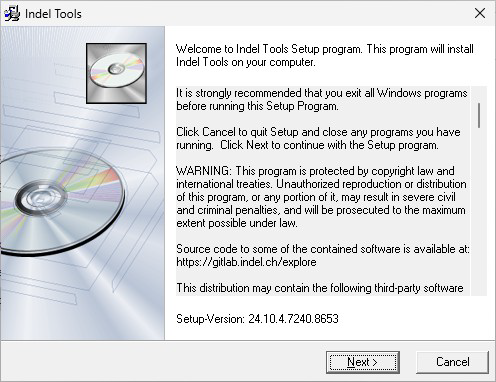
-
Leave the default path on
C:\\Indel.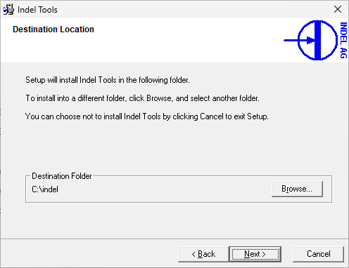
-
Define Indel Tools as name.
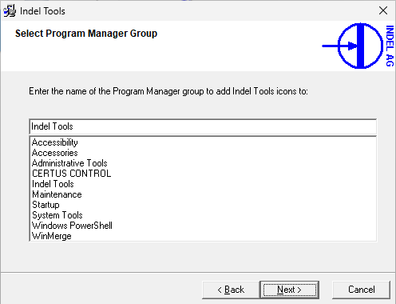
-
Uncheck all components.
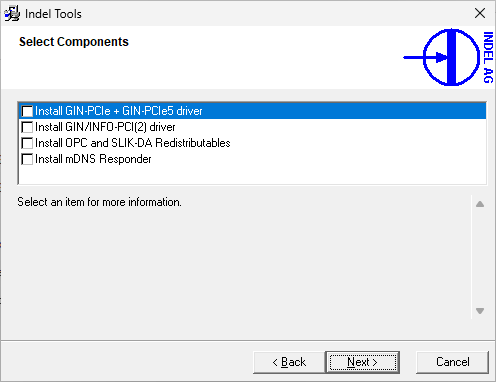
-
Select only the INCO Server rule.
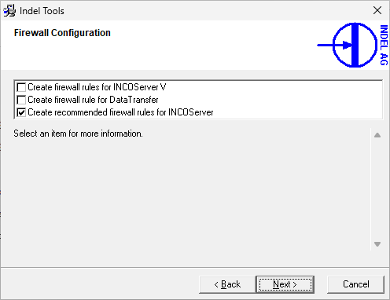
-
Confirm the installation with Next.
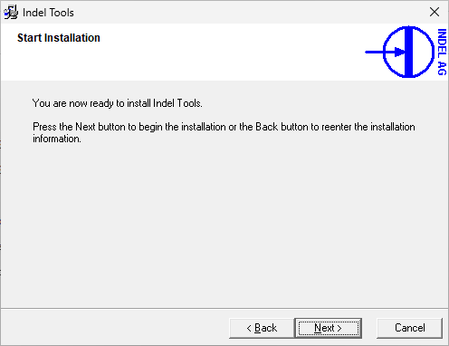
Note
Once the installation is complete, the following symbol appears in the taskbar:
Installing CERTUS FLEX Control¶
-
Double-click to execute
CERTUS CONTROL 2.1.19.msi.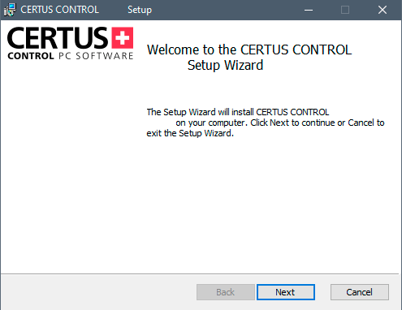
-
Read and accept the license agreement.
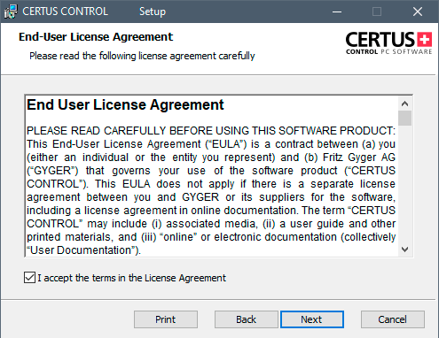
-
Select the type of application (see next page).
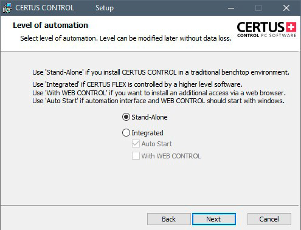
-
Execute the installation.
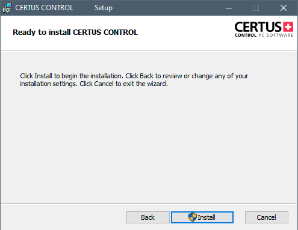
Note
- It is recommended to install the Net Framework 4.8 or higher.
- The necessary installer ndp48-x86-x64-allos-enu.exe can be found in the Setup CERTUS CONTROL 2.1.19 folder.
Stand-Alone Application¶
Select the Stand-Alone option if CERTUS FLEX is to be operated as a stand-alone unit.
Note
Once CERTUS CONTROL is successfully installed, the CERTUS CONTROL symbol appears on the desktop:
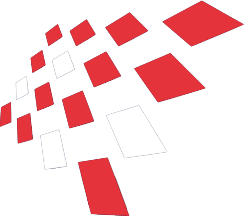
Integrated Application¶
If CERTUS FLEX is part of an automated system, select the Integrated option to make CERTUS FLEX integration possible.
The following two additional options are available for the installation:
- Auto Start: If the Auto Start option is selected, the automation interface and WEB CON- TROL are started automatically when the PC is started.
- WEB CONTROL: is an extension of CERTUS CONTROL. It allows the user to execute simple commands such as Flush, Prime or Purge via a web browser.
For the installation of WEB CONTROL, see WEB CONTROL - Installation.
URL-Reservation¶
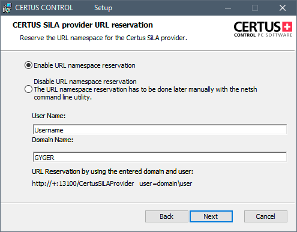
You can choose between automatic and manual reservation.
A reservation is necessary to allow non-administrator users to access a specific URL name- space.
Note
Once CERTUS CONTROL is successfully installed, the Integration Manager symbol appears on the desktop:
Activating the license¶
For the integration with laboratory automation, a license file is required.
Note
-
The license file to control CERTUS FLEX is closely coupled with the hardware of the PC on which CERTUS CONTROL is installed.
-
If the PC or its hardware is replaced, a new license should be requested.
Once CERTUS CONTROL is installed, the following steps should be taken:
A. Creating a license template
-
Double-click the Integration Manager symbol on the desktop.
-
Now the symbol appears in the taskbar.
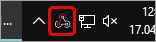
-
-
Double-click the Integration Manager symbol in the taskbar.
- The CERTUS Integration Manager opens.
-
Click Licence Template and send the XML file along with the serial number of the base unit to service@nnano.com (The license file will be delivered by the technical staff.)
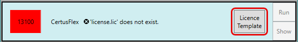
- Delivery of the license file (after one working day at the latest)
Note
For testing purposes, the integration can be executed as a simulation. You do not need a license or CERTUS FLEX for that.
B. Installing the license file
- Save the license file in:%ProgramData%\Gyger\CERTUS CONTROL\lic.
-
Start the CERTUS CONTROL Integration Manager (using the symbol in the taskbar).
- The license is activated and the Licence Template option is no longer visible.
Note
The license file can be renamed and moved. For support, please contact your distributor.
C. Restart
-
Restart the PC to complete the installation.
- The CERTUS CONTROL symbol appears on the desktop.
Note
For a new installation on another PC, a new license file is needed. Please contact us by e-mail at service@nnano.com to request a new license file.
Additional information¶
Reserve URL namespace¶
Reserve Certus SiLAprovider URL
The CERTUS CONTROL installer reserves the Certus SiLA provider URL with the default port 13100 (url=http://+:13100/CertusSiLAProvider).
The reservation can also be done manually with the netsh command line utility. Per default Certus SiLA provider runs on port 13100.
The Certus SiLA provider runs on port 13100 by default.
The following example reserves the URL namespace for the CERTUS SiLA provider on port 13100:
- Open the command prompt as administrator.
-
Type:
*netsh http add urlacl url=http://+:13100/CertusSiLAProvider user= domain \ userNote: Replace domain and user with the actual values.
-
Confirm with Enter.
Reserve event receiver URL
This command has to be executed on the PC where the scheduler software runs.
For port number and event receiver URL ask your scheduling software provider.
- Open the command prompt as administrator.
-
Type:
netsh http add urlacl *url=http://+:PortNumber / EventReceiverURI user=[domain]\\[user]Note: Replace PortNumber, EventReceiverURI, domain, and user with the actual values.
-
Confirm with Enter.
Checking Access to the CERTUS SiLA Provider
-
Enter (http://localhost:13100/CertusSilAProvider?wsdl) in your browser.
Note
The URL can be used if the SiLA provider and browser are installed on the same computer.
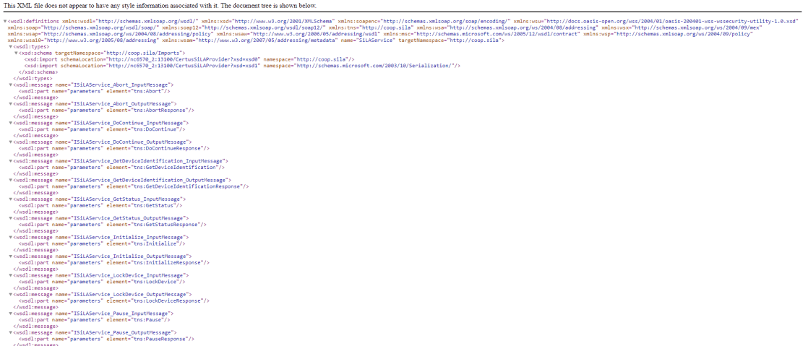
-
SiLA provider's WSDL is shown.
-
CERTUS SiLA can only be used in conjunction with PMS.
Starting/stopping the SiLA provider
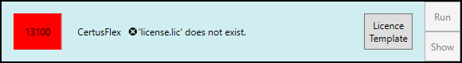
| active | stops the SiLA provider | |||
| status change | opens a maintenance window for the host | |||
| inactive | starts the SiLA provider |
Logging on¶
Logging on as an Administrator¶
When you log on for the first time to the user profile management, you need to have a predefined user profile with administrator rights:
| User name | Admin |
| Password | admin |
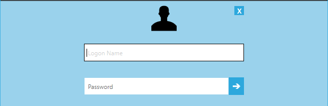
Note: Unauthorized admin access
After you log in as “Admin” for the first time, you should immediately change your password “admin” to prevent unauthorized access to the admin account.
► After log-in: Users > Double-click the administrator > Edit User.
► Replace the password admin with a new one and confirm with Save.
Note
More information on Users and the creation and edition of other user accounts can be found in the section, see Users.
Logging onto the Simulation Mode¶
If no CERTUS FLEX is available or you give up hardware control, the simulation mode is used.
A simulation can be started as follows:
-
In the start menu, select CERTUS CONTROL Simulation and press ENTER.
-
After you log on, select the desired dispensing head.
Overview -- Start Menu¶
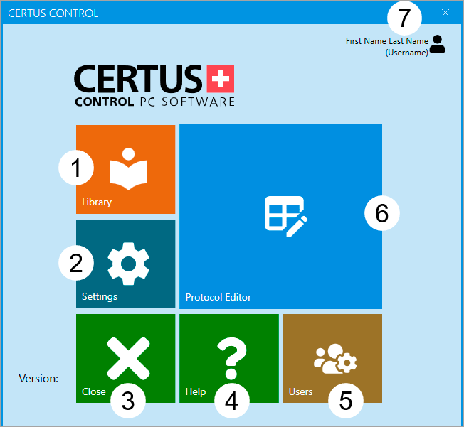
| # | Item | Description | |
|---|---|---|---|
| 1 | Library | Edit measures and software functions. See Library | |
| 2 | Settings | Manage and calibrate fluids, micro valves, and well plates. See Settings | |
| 3 | Close | Close the software. | |
| 4 | Help | View the license agreement, documentation, and system information, and create backups. See Help | |
| 5 | User | Edit user data. See Users | |
| 6 | Protocol Editor | Create and execute experiments. See Protocol Editor | |
| 7 | 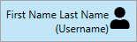 |
Current User | Shows the current user's name. |
Library¶
In the Library menu, you can manage all fluids, micro valves, well plates, and calibrations for an experiment. Next, you go to Protocol Editor. When you click Library in the start menu, a separate window (Library Manager) opens.
Note
Before you can start an experiment, all data, if they are not available yet, should be acquired in Library Manager.
Symbols in use
| Icons | Description | |
|---|---|---|
| Title bar: Saves the change and closes the window. Active only if a change has been made. | ||
| Setting predefined by the manufacturer. | ||
| Active element that has been temporarily loaded. |
Menu bar¶
| # | Menu | Function | Description |
|---|---|---|---|
| 1 | Editor | Save and quit | Saves the changes and closes the windows. |
| Quit | Closes the window. | ||
| 2 | Export | Export to file | Exports fluids, valves, calibrations, plates to a file according the selected file format. The ".calibration" file will also include the related fluids. |
| 3 | Import | Import from file | Import fluids, valves, calibration, plates from a file. |
| Legacy V1 Fluids | Imports fluids from a v1 configuration file1. | ||
| Legacy V1 Valves | Imports valves from a v1 configuration file1. | ||
| Legacy V1 Plates | Imports plates from a v1 configuration file1. | ||
| Legacy V1 Calibrations | Imports calibrations from a v1 configuration file1. |
Fluid¶
All fluids are defined here:

Input area
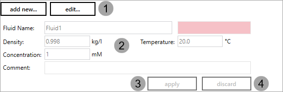
| # | Field | Description |
|---|---|---|
| 1 | add new | Add a new fluid |
| edit | Edit a fluid (first select a fluid) | |
| 2 | Fluid Name | Fluid name |
| Density | Fluid density | |
| Concentration | Molar concentration of the fluid | |
| Color | Color identification of the fluid (from the palette or RGB) | |
| Comment | Comment on the fluid (e.g., composition) | |
| Temperature | Fluid temperature | |
| 3 | apply | Confirm changes made |
| 4 | discard | Discard changes made |
Note
Units of fluid features can be adjusted in Settings. For more information see.
Context menu
When you right-click selected fluid, a context menu with more commands opens.
| Make permanent | Switch the fluids from temporary to permanent. | |
| Delete | Delete the selected fluids. | |
| Export... | Export the selected fluids. |
Valve¶
It is where all micro valves are managed:
Symbols in use¶
| Information (legend for micro valves) |

Input area¶
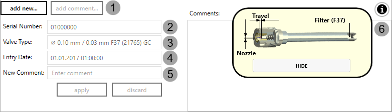
| # | Field | Description |
|---|---|---|
| 1 | add new | Activates the text box for a new serial number |
| add comment | A new comment can be added to the comment section | |
| 2 | Serial Number | Text box for the serial number of a micro valve |
| 3 | Valve Type | The valve type will be displayed by typing the serial number with the following order: Nozzle diameter / Travel (Filter) (product number) |
| 4 | Entry Date | Entry date for the newly added micro valve |
| 5 | New Comment | New comment to be attached to the comment section |
| 6 | Info (i) | Visualization of a micro valve with labels |
Note
Click on HIDE to hide the image.
Context area¶
Right-click the selected micro valves to open a context menu with more commands.
| Make permanent | Switch the micro valves from temporary to permanent. |
| Delete | Delete the selected micro valves. |
| Export... | Export the selected micro valves. |
Well Plate¶
It is where all well plates are defined:
Symbols in use¶
| Warning about settings |
Well plate – definitions¶

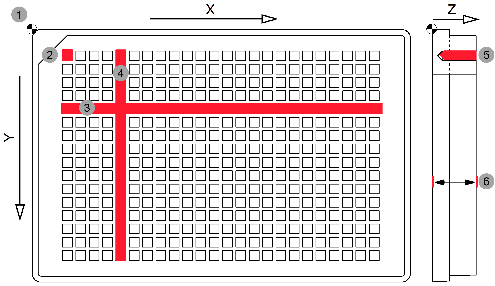
| # | Term | Definition |
|---|---|---|
| 1 | Reference | Reference point of the unit |
| 2 | Well | Single well plate cavity |
| 3 | Row (X) | Row across the entire well plate |
| 4 | Column (Y) | Column across the entire well plate |
| 5 | Well Volume | Maximum well volume |
| 6 | Plate height | Well plate |
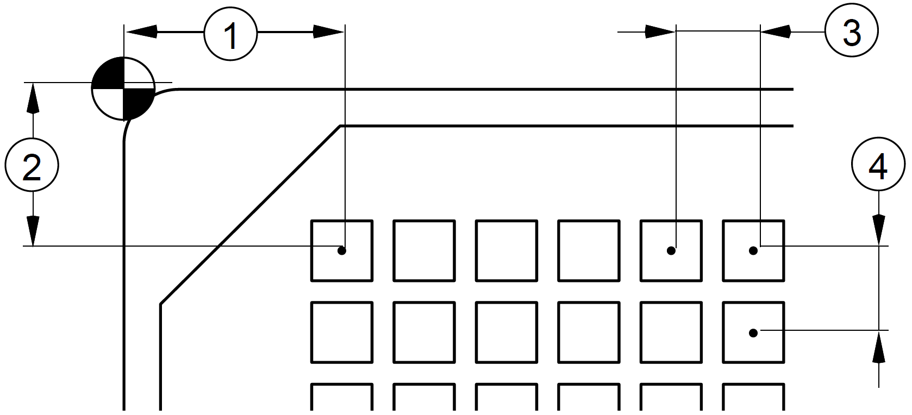
| # | Term | Definition |
|---|---|---|
| 1 | Offset (X) | Horizontal distance between the reference point and the first well |
| 2 | Offset (Y) | Vertical distance between the reference point and the first well |
| 3 | Pitch (X) | Horizontal distance between two wells |
| 4 | Pitch (Y) | Vertical distance between two wells |
Input area¶
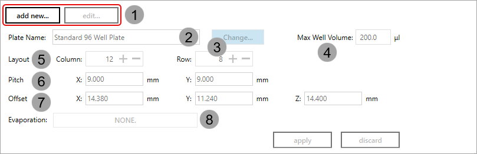
| # | Field | Description | |
|---|---|---|---|
| 1 | add new | Add a new well plate | |
| edit | Edit a well plate (select it first) | ||
| 2 | Plate Name | Well plate name | |
| 3 | Color | Color identification of the well plate (palette or RGB) | |
| 4 | Well Volume | Maximum well volume | |
| 5 | Layout | Col: | Number of wells in a column (vertical) |
| Row: | Number of wells in a row (horizontal) | ||
| 6 | Pitch | X: | Distance between two wells in the X direction (horizontal) |
| Y: | Distance between two wells in the Y direction (vertical) | ||
| 7 | Offset | X: | Distance to thefirst (upper left) well in the X direction (horizontal) |
| Y: | Distance to the first (upper left) well in the Y direction (vertical) | ||
| Z: | Well plate height | ||
| 8 | Evaporation | Optional use of an evaporation curtain | |
| Clicking NONE opens EDIT EVAPORATION CURTAIN. |
Context menu¶
Right-clicking the selected well plates opens a context menu with more commands.
| Make permanent | Switch the well plates from temporary to permanent. |
| Delete | Delete the selected well plates. |
| Export... | Export the selected well plates. |
Evaporation Curtain¶
Note
An evaporation curtain is used to reduce evaporation deviations, also called edge effects, in border wells due to external factors such as ambient temperature.
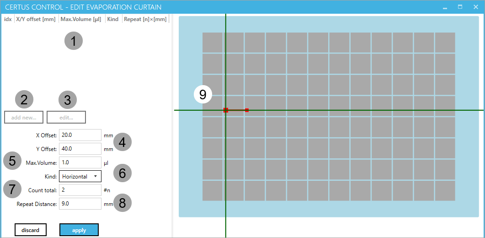
| 1 | Evaporation list | List defined dispensing rows in this evaporation curtain |
| 2 | add new | Add a new dispensing position |
| 3 | edit | Edit the dispensing position |
| 4 | X Offset | Horizontal distance between the reference point and the dispensing point |
| Y Offset | Vertical distance between the reference point and the dispensing point | |
| 5 | Max. Volume | Maximum volume of the evaporation zone |
| 6 | Single | Single dispensing |
| Horizontal | Dispensations in the horizontal direction | |
| Vertical | Dispensations in the vertical direction | |
| 7 | Count total | Number of dispensations in the relevant direction |
| 8 | Repeat Distance | Distance between repeat dispensations |
| 9 | Preview | View dispensing positions for the evaporation zone |
Context menu¶
Right-clicking a dispensing row opens a context menu with more commands.
| Move-UP | Move a dispensing point up |
| Move-DOWN | Move a dispensing point down |
| Delete Evaporation | Delete a dispensing point from the list |
Calibration¶
Viewing and managing all calibrations.
Symbols in use¶
| Symbol | Description |
|---|---|
| Flags calibrations which use a fluid that is currently missing from the library. |
Note
Right-clicking a calibration opens the CERTUS VIEW CALIBRATION window. It shows individual calibration points, data, and curves. You cannot change them. For more information see CERTUS Calibrator.
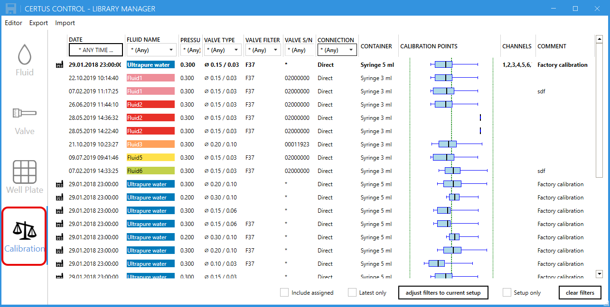
Filtering Possibilities¶
Filters can be used to partially reduce the number of all calibrations. Calibrations can be filtered by date (Date), fluid name (Fluid name), pressure (Pressure), micro valve type (Valve Type), micro valve filter (Valve Filter), micro valve serial number (Valve S/N), and connection (Connection).
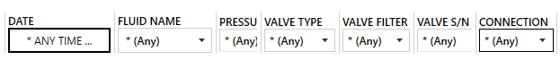
Input area¶
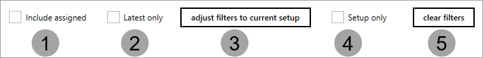
| # | Description |
|---|---|
| 1 | Include calibrations assigned to the current dispensing head |
| 2 | Show only the latest calibrations of each setup |
| 3 | List only calibrations suitable for the current dispensing head |
| 4 | Show what calibrations are used with the current dispensing head |
| 5 | Delete all filters |
Context menu¶
Right-clicking the selected calibrations opens a context menu with more commands.
| Action | Description |
|---|---|
| Make permanent | Switch the calibrations from temporary to permanent. |
| Delete | Delete the selected calibrations. |
| Export... | Export the selected calibrations including the related fluids |
| View... | Open a window showing calibration details. |
Settings¶
The Settings menu enables to customize CERTUS CONTROL or define general default values.
Default Values¶
The default values of the measures and laboratory balances used are defined here.
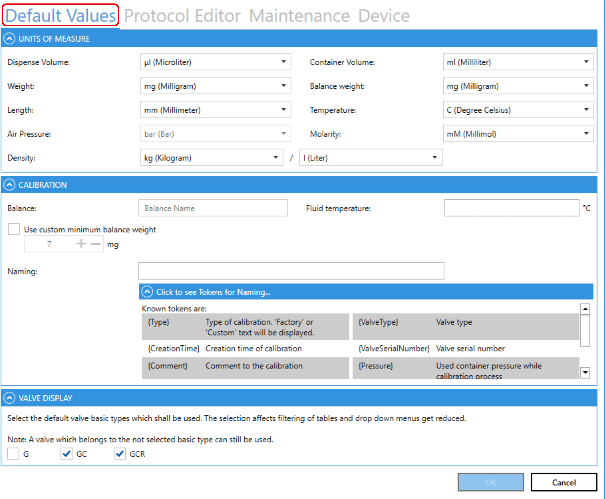
Note
Changes in the measures are automatically updated and the values entered converted accordingly.
Calibration¶
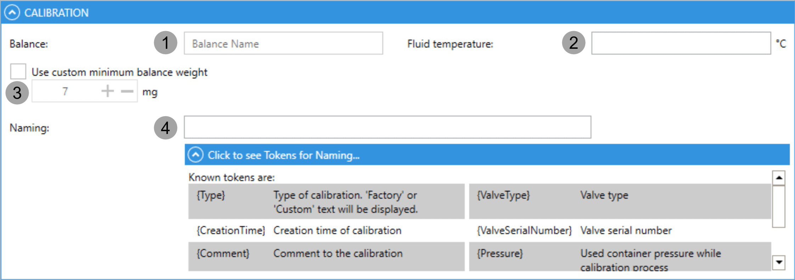
| # | Item | Description |
|---|---|---|
| 1 | Balance | Define the default value of the balance name |
| 2 | Fluid temperature | Define the default value of fluid temperature |
| 3 | Minimum weight | The dispensing weight during calibration (for laboratory balances with a rough reading accuracy) |
| 4 | Naming | Defines the name of the calibration with tokens. It will be displayed in the channel configuration inside the protocol editor. |
| See Adjust the Calibration name |
Valve Display¶
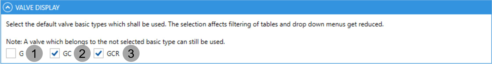
| # | Valve Type | Description |
|---|---|---|
| 1 | Valve type G | Will be shown in the Library if selected |
| 2 | Valve type GC | Will be shown in the Library if selected |
| 3 | Valve type GCR | Will be shown in the Library if selected |
Note
The valve types can also be selected in the Library Manager. For Information about the different micro valve types, please contact your distributor.
Protocol Editor¶
The settings of the Protocol Editor are defined here.
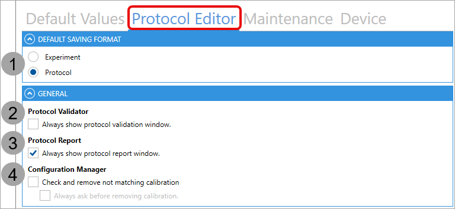
| # | Setting | Description |
|---|---|---|
| 1 | Default saving format | Storage format (.expt/.protocol) |
| 2 | Protocol Validator | Show/hide the protocol inspection window |
| 3 | Protocol Report | Show/hide the protocol reporting window |
| 4 | Configuration Manager | Check and remove non-matching calibration |
| Always ask before removing calibration |
Note
- expt: contains Configuration and Protocol
- protocol: contains only Protocol
Maintenance¶
Various maintenance settings are defined here.
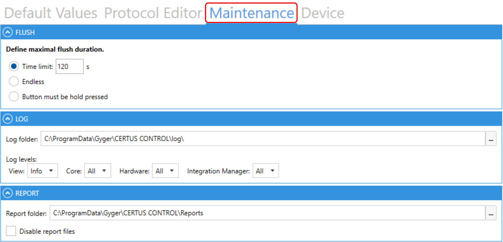
Flush¶
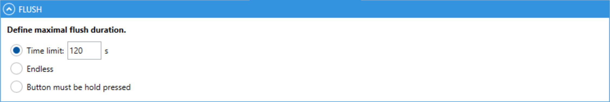
| Time limit | Define the maximum duration of a flush command |
| Endless | The flush command is executed until the stop button is pressed |
| Button must be hold pressed | The flush command is executed until the stop button is released again |
Log¶
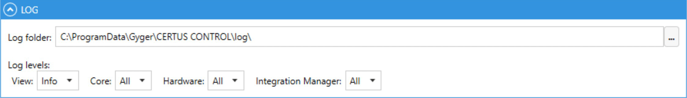
| Log folder | Define a customized path for log files. Default: C:\ProgramData\Gyger\CERTUS CONTROL\log |
| Log levels | Define a log level for each software module (View, Core, Indel, or SiLA). Levels: All, Info, Warn (sorted by priority). |
Report¶
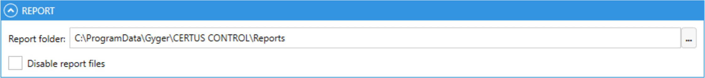
| Report folder | Define a customized path for report files |
| Disable report files | Disable report file settings |
Device¶
Various device settings are defined here.
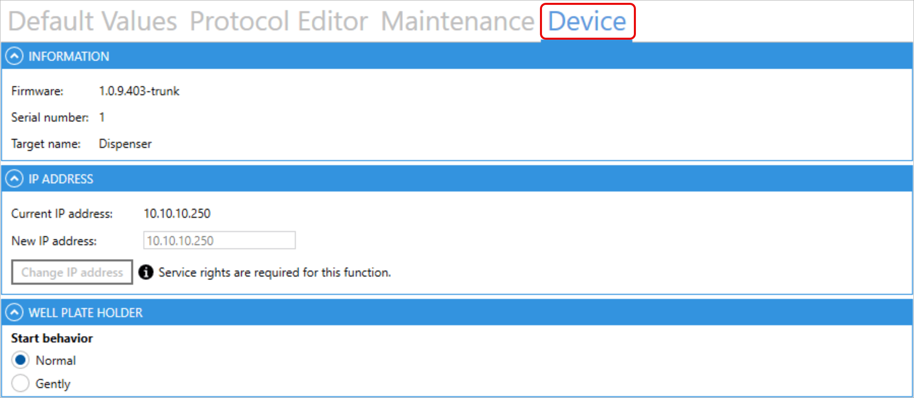
Information¶
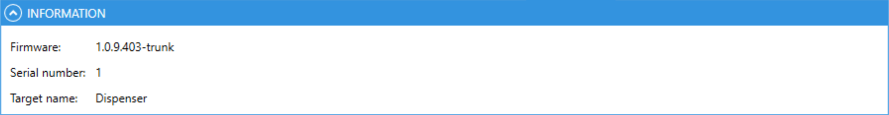
| Item | Description |
|---|---|
| Firmware | The currently installed CERTUS FLEX firmware. |
| Serial Number | The serial number of the CERTUS FLEX. |
| Target Name | Name used for communication with CERTUS CONTROL. |
Note
The IPaddress can only be changed as a user with service rights!
IP Address¶
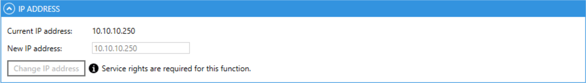
| Setting | Description |
|---|---|
| Current IP Address | IP address currently used |
| New IP Address | Defines a new IP address |
| Change IP | Set a new address |
Note
The IP address can only be changed by a user with support rights!
Well Plate Holder¶
Here the acceleration ramp of the well plate holder can be selected. To use this feature, the following requisites are required:
| CERTUS CONTROL | Version 2.1.15 or higher |
| CERTUS FLEX Firmware | Version 1.0.9.403 or higher |
Note
CERTUS CONTROL 2.1.15 can also be used with an older firmware version. However, in this case this feature is not available.
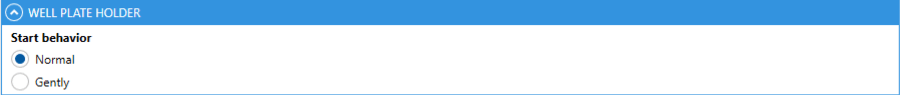
| Normal | Normal acceleration of the well plate holder. |
| Gently | Slow acceleration of the well plate holder. The well plate is always clamped during a pre-dispense phase. |
Help¶
In the Help menu, you will find help on the program. In addition, the user manual in PDF format is available here.
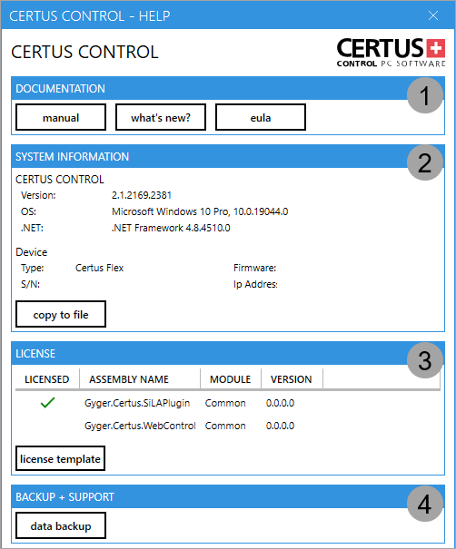
| # | Item | Description |
|---|---|---|
| 1 | Documentation | Access documentation resources |
| manual | Open this user manual | |
| what's new? | Overview of CERTUS CONTROL releases | |
| eula | End user license contract | |
| 2 | System Information | Software and hardware information |
| copy to file | Export information as an XML file | |
| 3 | License | License overview |
| 4 | Backup + Support | Backup and support |
| data backup | Create a backup of all software related data |
Users¶
In the Users menu, you can create new users or manage existing ones. CERTUS CONTROL differentiates between three user levels: Operator, Administrator and Service.
Note
You can only make changes to your own user details or those of users with lower user rights.
Symbols in use¶
| Title bar: Clicking saves the change and closes the window. (Active only if a change has been made.) |
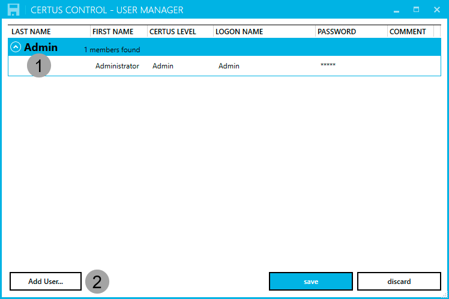
| # | Item | Description |
|---|---|---|
| 1 | Admin | Listing by user rights |
| 2 | Add User... | Open a window to add a new user |
Context menu¶
Right-clicking the listed user opens a context menu with more commands.
| Edit User | Edit user data |
| Delete User | Delete the user |
| Add User | Add a new user |
Adding Users¶
Logon through manual registration¶
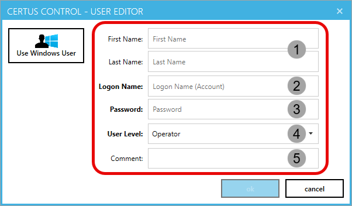
| # | Field | Description |
|---|---|---|
| 1 | First Name | User's first name |
| Last Name | User's last name | |
| 2 | Logon Name | Logon name |
| 3 | Password | User password |
| 4 | User Level | Define the user level |
| None | Disable the user account | |
| Operator | User with restricted access (predefined only) | |
| Admin | User with administrator rights | |
| Service | For support staff only | |
| 5 | Comment | (Optional) Comment on the user account |
Logon as a Windows User¶
When you log on as a Windows user, the user name and password of the current PC account is used to log on to CERTUS CONTROL. This helps the user log on faster.
Note
As the user has already been authenticated by logging on to Windows, no CERTUS CONTROL logon is required.
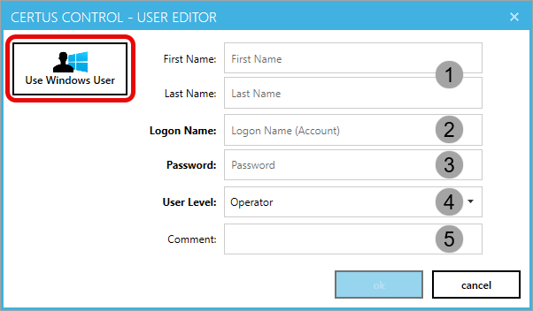
Selecting users or groups¶
Clicking Use Windows User opens Window's Directory Object Picker Dialog. This dialog enables to select which Windows user is to be used.
Note
When CERTUS CONTROL is started next time, the software automatically uses the user account.
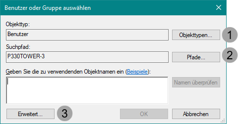
| # | Description |
|---|---|
| 1 | Group or/and user |
| 2 | Search path (where should it be searched?) |
| 3 | Extended search settings |
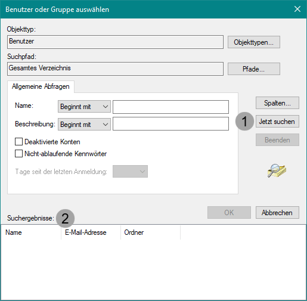
| # | Description |
|---|---|
| 1 | Start search for Windows users |
| 2 | List Windows users found |
- Select the desired user from the list and click OK to confirm.
- The extension window is closed and user data are accepted.
- Confirm once again with OK.
- The window is closed and user data (logon name and password) are imported into USER EDITOR.
- Where necessary, adjust the name and surname and define the user level.
- Clicking OK creates a user, which is then listed in USER MANAGER.
- The Windows user was successfully added.
Protocol Editor¶
Clicking Protocol Editor in the start menu opens the Protocol Editor window. Experiments are prepared and executed in Protocol Editor.
Note
Before you can start an experiment, all basic data (fluid, micro valve, well plate) has to be included in the library.
Symbols in use¶
| Icons | Description |
|---|---|
| Title bar: Clicking saves the change and closes the window. (Active only if a change has been made.) | |
| Title bar (Quick Access): Opens a new protocol |
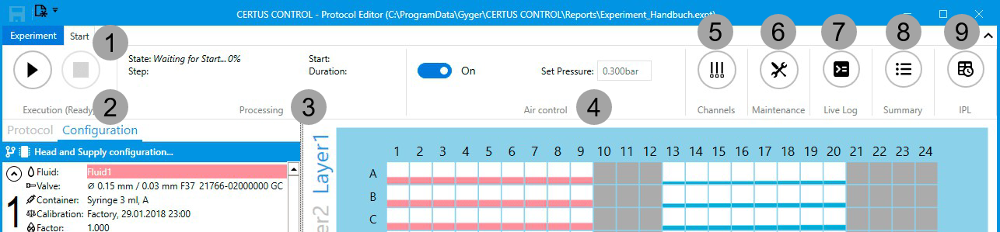
| # | Item | Description |
|---|---|---|
| 1 | Experiment | Clicking the Experiment tab opens the backstage view |
| 2 | Execution | Execute, stop, and pause the experiment |
| 3 | Processing | Show the current execution status |
| 4 | Air control | Switch on and off compressed air |
| 5 | Channels | Open Configuration Manager |
| 6 | Maintenance | Open Flyout Maintenance. Enable manual execution of dispensing commands. |
| 7 | Live Log | Open Flyout Live Log. Enable text-based monitoring of processing. |
| 8 | Summary | Open an overview of the current experiment |
| 9 | IPL | Open Flyout Interval Purge Loop |
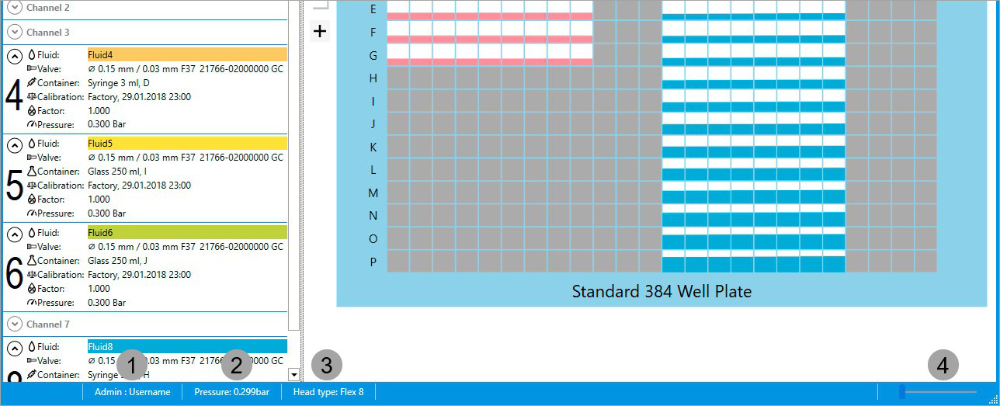
| # | Description |
|---|---|
| 1 | Show the rights and name of the logged-on user |
| 2 | Show the compressed air in current use |
| 3 | Show which dispensing head is connected |
| 4 | Change the view zoom of the well plate |
Operating Principle¶
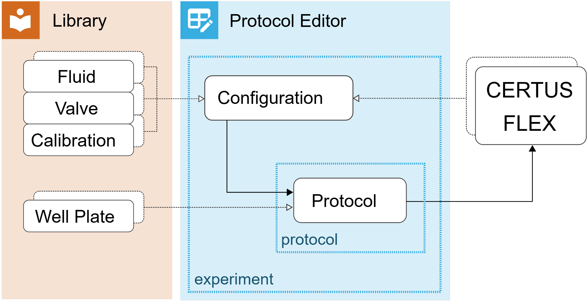
Protocol Editor sources its information in Library.
Information in Configuration should reflect CERTUS FLEX current status (such as fluid, connected channels, type of micro valve, and calibrations).
In Protocol, dispensing information and settings are defined (such as volume, well number, and fluid).
| File Type | Description |
|---|---|
| experiment (.expt) | The experiment file consists of configuration and protocol parts. This format is suitable if you would like to repeat the same experiment with exactly the same configuration later on. |
| protocol (.protocol) | The protocol file consists of only the protocol part. No configuration data is saved. This format is suitable if you would like to start a protocol with various configurations. |
Experiment Menu¶
Clicking the Experiment tab brings you to the backstage view. Here you can save and open protocols and experiments, as well as enable the dispensing head view.
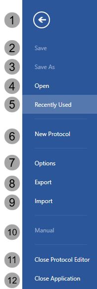
| # | Item |
|---|---|
| 1 | Back to Protocol Editor |
| 2 | Save |
| 3 | Save as (*.expt or *.protocol) |
| 4 | Open (*.expt or *.protocol) |
| 5 | Recently used files or folders (listed on the right) |
| 6 | Create a new protocol |
| 7 | Switch on and off the dispensing head view |
| In the simulation mode, the following settings are available: | |
| • Speed of the moving dispensing head (selection on the right) | |
| • Dispensing speed (selection on the left) | |
| 8 | Export protocol to XML (SpreadsheetML 2003 format) |
| 9 | Import dosage volumes from CSV |
| The format of the csv file must correspond to the CERTUS CONTROL. | |
| 10 | Open the user manual |
| 11 | Close Protocol Editor |
| 12 | Close CERTUS CONTROL |
Configuration¶
The Configuration tab shows the current channel configurations. The data used for that comes from the library.
The defined channel configurations should reflect the current status of CERTUS FLEX, such as supply kits, fluid classifications, channel activations, etc.
Symbols in use¶
| Symbol | Description |
|---|---|
| Symbol standing for dispensing head configuration | |
| Symbol standing for supply configuration | |
| Start/pause dispensing | |
| Stops dispensing | |
| Compatibility of all calibration properties with the channel configuration | |
| The volume factor is other than 1 | |
| Incompatible with the currently installed dispensing head |
| # | Item | Description |
|---|---|---|
| 1 | Head and Supply configuration... | Left-click: Opens Template Manager (p. 102) for managing configuration templates. |
| Right-click: Transfer configuration (p. 161) for transferring configuration to other dispensing head types. | ||
| Management of dispensing head templates | ||
| 2 | Channel (#1) | The channel overview provides information on configuration elements in use. |
Context menu¶
Right-clicking Channel opens a context menu with more commands.
| Command | Description |
|---|---|
| Edit Channels | Edit channels. Opens Configuration Manager |
| Calibrate | Open the CERTUS Calibrator window for calibrations |
| Verify | Verify the calibration |
| Disable | Disable the channel |
| Enable | Enable the channel (visible only when disabled) |
Template Manager¶
Clicking Head and Supply configuration... Opens the *Template Manager window. You can apply, save, and edit dispensing head templates here.
In principle, the dispensing head template consists of two parts:
- Supply configuration For each channel, it contains the assigned fluid, container, pressure, volume factor, and calibration.
- Dispensing head configuration For each channel, it contains the dispensing head (Flex8, Flex5, etc.) and the micro valve used, and informs if the channel is active.
Note
A template may also contain only one of these parts. This can be defined when creating a dispensing head template.
| # | Item | Description |
|---|---|---|
| 1 | Save Active Configuration | Save the currently active configuration |
| 2 | Templates | List the saved dispensing head templates |
| 3 | Fluid Supply Preview | This template’s supply configuration |
| 4 | Valve Head Preview | This template’s dispensing head configuration |
Context menu¶
Right-clicking a Dispensing head template in the Template list opens a context menu with more commands.
| Command | Description |
|---|---|
| Apply... | Apply the dispensing head template. Using a Dispensing Head Template |
| Rename | Rename the dispensing head template. |
| Save as... | Save a copy of the dispensing head template. Copy the Configuration Template |
| Delete | Delete the dispensing head template. The active configuration as well as the factory templates cannot be deleted. |
CERTUS Calibrator¶
Right-click the channel under Configuration and select Calibrate to open the CERTUS Calibrator window.
Here you can create calibrations to increase dispensing accuracy. For more information, see Calibration.
Symbols in use¶
| Icon | Description |
|---|---|
| Flags the assigned calibration in the relevant channel | |
| Calibration attribute incompatible with the relevant channel configuration attribute | |
| Calibration successfully completed | |
| Newly created calibration point does not lie within the tolerance range of ± 5% | |
| Marks a standard calibration point | |
| Flags a customized calibration point (*! = most recently defined) |
| # | Item | Description |
|---|---|---|
| 1 | Configuration | Overview of the current channel configuration |
| 2 | Setup | Open Flyout Maintenance (Fig. 61, p. 106) |
| 3 | Calibration | Overview of calibration points (Fig. 62, p. 106) |
| 4 | Graph | Graphical representation of flow rate and volume (p. 106) |
| 5 | Metadata | Calibration data (Fig. 65, p. 109) |
| # | Item | Description |
|---|---|---|
| 1 | Balance weight unit | Set the currently used balance unit |
| 2 | Maintenance | Open Maintenance Flyout for the flush and air ON/OFF functions |
| # | Item/Action | Description |
|---|---|---|
| 1 | Dispense | Dispensing with a specified opening time and closing number |
| 2 | Enable/Disable | Enabling/disabling of calibration points. |
| By selecting "Show disabled calibration points" the deactivated points are shown/hidden. | ||
| 3 | Symbols | Tagging of standard and customer-specific calibration points |
| 4 | Open Time | Valve opening time for this calibration point |
| 5 | Shots | Closing number with a specified opening time |
| 6 | Weight | Balance/measured weight of the dispensed quantity |
| 7 | Volume | Volume calculated from measured weight and density |
| 8 | Flowrate | Flow rate calculated from volume and opening time |
| 9 | Load Calibration | Load calibration values from the library |
| 10 | Add Point | Add a customized calibration value |
Context menu¶
Right-click on a row with a calibration point opens the context menu enabling further commands.
| Command | Description |
|---|---|
| Edit Volume... | Opens a menu for editing the volume. See Calibration Point - Volume Editing |
| Delete Values | Deletes calibration points. With the CTRL key pressed, multiple points can be selected. |
| # | Item | Description |
|---|---|---|
| 1 | Flow rate | Flow rate |
| 2 | Open Time | Micro valve opening time |
| 3 | Calibration | Calibration point |
| # | Item | Description |
|---|---|---|
| 1 | Volume | Dispensed volume |
| 2 | Open Time | Micro valve opening time |
| 3 | Calibration | Calibration point |
Note
The graph can be zoomed in/outwith the mouse wheel and moved by holding down the right mouse button. See Verification using the Graph.
Context menu¶
Right-click on a curve opens the following commands:
| Option | Description |
|---|---|
| Show Factory | Enables/disables the display of the standard calibration curve (gray) for the corresponding current micro valve, supply kit, and ultrapure water as the media. |
| Show Current | Enables/disables the display of the current calibration curve (orange). |
| Linear Time Axis | Toggles the time axis scaling between logarithmic and linear. |
| Linear Volume Axis | Toggles the volume axis scaling between logarithmic and linear. |
| Reset Axis | Resets the graphs to default. |
| # | Field | Description |
|---|---|---|
| 1 | User | User name |
| 2 | Laboratory | Laboratory name |
| 3 | Date | Date with time stamp |
| 4 | Balance | Name of the laboratory balance used |
| 5 | Fluid temp | Temperature of the calibrated fluid |
| 6 | Comment | (Optional) Comment on the calibration |
Calibration Point - Volume Editing¶
After selecting Edit Volume in the context menu of a calibration point (page 99), the Calibration Point Volume Edit window opens. Here the volume of the calibration point can be readjusted by entering the measured volume or a factor.
Note
→ Hence + 1% corresponds with a factor of 1.010.
| # | Field | Description |
|---|---|---|
| 1 | Volume Measured | Entry of a measured volume. |
| 2 | Factor | Entry of a correction factor. |
| 3 | Initial | The initial value of the calibration point to be corrected. |
| 4 | Resulting | The calibration point resulting from the correction. |
| 5 | OK | Accepts the entered correction. |
Custom calibration by volume¶
Clicking Add Values opens the Custom Calibration by Volume window. Here you can calibrate a customized target volume.
See Adding customized Calibration Points
| # | Field | Description |
|---|---|---|
| 1 | Target Volume | Target volume for the calibration |
| 2 | Shots | Closing number |
| 3 | Deviation | Deviation from the entered target volume |
| 4 | Selection | Select the calibration point |
| 5 | Take Best | Select a calibration value with the lowest deviation (%), which is included in the calibration list. |
Calibration Selector¶
Clicking Load Values opens the Calibration Selector window. Here you can compare calibrations included in Library with those defined in the configuration and add them to the calibration list.
| # | Item |
|---|---|
| 1 | Select Calibration from which to load values |
| Selection of calibrations included in the library, which can be filtered. | |
| (See Filtering possibilities) | |
| 2 | Text box with limiting possibilities |
| (See Input area) | |
| 3 | Compare to Configuration |
| Compare the selected calibration with the current channel configuration |
Note
To view calibration values in Calibration Selector: Right-click the calibration and click View Calibration.
Configuration Manager¶
Clicking the Channels symbol or double-clicking the channel area opens the Configuration Manager window.
Individual or multiple channels are configured here.
Note
The behavior regarding the removal of calibrations can be set under Settings => Protocol Editor.
Symbols in use¶
| The entered pressure is too high/low (allowable = 0.051 – 1.00 bar) |
| # | Item | Description |
|---|---|---|
| 1 | Fluid Supply Kits | Create/manage bottle and syringe kits. Assign a fluid and pressure to each bottle or syringe kit. |
| 2 | Channel Configuration | Configure individual dispensing channels. A channel consists of a kit, a micro valve, a factor value, and a calibration. |
| # | Item | Description |
|---|---|---|
| 1 | Kit-ID | Letter identification of the kit |
| 2 | Fluid Supply | Supply kit with a number of outlets |
| 3 | Fluid | Dedicated fluid in the container |
| 4 | Pressure [bar] | Operating pressure for the supply kit (0.01 to 1.00 bar) |
| 5 | Add Supply Kit | Add more bottle/syringe kits |
Context menu¶
Right-clicking fluid Supply Kits opens a context menu with more commands:
| Command | Description |
|---|---|
| Change Kit ID letter | Change the kit ID letter |
| Delete Kit | Delete the kit |
| # | Item | Description |
|---|---|---|
| 1 | En (Enable) | Enable or disable the channel |
| 2 | Supply Kit | Select the supply kit |
| 3 | Valve | Select the micro valve |
| 4 | Calibration | Assigned calibration (clicking the Box Plot opens Calibration Manager) |
| 5 | Factor | Correction factor of the dispensing volume |
Context menu¶
Right-clicking the Channel Configuration opens the following commands:
| Command | Description |
|---|---|
| Copy Channel | Copy the selected channel configuration |
| Paste Channel | Paste the copied channel configuration |
| Move Channel | Replace or exchange the channel configuration with another channel |
Calibration Manager¶
In Calibration Manager, the calibration is reassigned to the relevant channel.
| # | Description |
|---|---|
| 1 | Select current Calibration - |
| Use various filtering possibilities to select a calibration suitable for this channel. | |
| (See Filtering possibilities) | |
| 2 | Text box with limiting possibilities |
| (See Input area) | |
| 3 | Compare to Configuration |
| Compare the selected calibration with the current channel configuration. |
Maintenance¶
Clicking the Maintenance symbol opens Maintenance Flyout on the right. Individual or multiple channels can be flushed here before a protocol is executed.
Switching on/off compressed air is also made possible.
| # | Item | Description |
|---|---|---|
| 1 | Definition | Select the channel and defines operation of the dispensing head during execution |
| 2 | Preparation | Dispensing commands to prepare the channel |
| 3 | Cleaning | Dispensing commands to clean the channel |
| 4 | Air | Switch on/off compressed air (execution without compressed air is impossible) |
| 5 | Axis | Bring the axes back to their park position after collision |
| # | Description |
|---|---|
| 1 | Select/disable all channels |
| 2 | Channel number |
| 3 | Fluid assigned to the channel |
| 4 | Define the prime volume |
| 5 | Define the purge volume |
| 6 | Move down the dispensing head before use |
| # | Description |
|---|---|
| 1 | As long as the key is pressed, the micro valve is flushed |
| 2 | Open the micro valve until the prime volume is reached |
| 3 | Briefly opens and closes the micro valve until the purge volume is reached (the volume is further divided depending on the micro valve) |
| 4 | Cleaning cycle: a combination of Prime and Purge |
| 5 | Number of cleaning cycle repetitions |
| # | Description |
|---|---|
| 1 | Switch compressed air on / off. |
| 2 | Air pressure mode |
| * Auto: The air pressure defined in the supply kit is used. | |
| * Manual: Any air pressure can be selected. (0.051 - 1 bar) |
Note
Air pressure mode set to Manual can cause deviations in the dispensed prime and purge volumes.
Live Log¶
Clicking the Live Log symbol displays a flyout window with completed protocol steps at the bottom part of the screen.
Here you can view individual processes during dispensing.
| # | Item | Description |
|---|---|---|
| 1 | Back | Close the view and returns to Protocol Editor |
| 2 | Protocol Output | List all protocol preparation steps |
| 3 | Error | List protocol preparation errors, which have to be confirmed with Cancel to continue |
Summary¶
Clicking the Summary symbol displays an overview of the current experiment. Here, the selected element is summarized in the protocol area.
Interval Purge Loop (IPL)¶
Clicking the IPL symbol opens a flyout window on the right.
Here, a prime/purge cycle (which corresponds to a clean cycle) can be executed at the desired interval over a longer time period (up to three days).
It is used to prevent reactions such as fluid hardening/agglutination during longer down- times.
| # | Description |
|---|---|
| 1 | Clicking the arrow closes the window |
| 2 | Start, pause, and stop execution |
| 3 | Select the channel for a prime/purge cycle |
| 4 | Save and load IPL settings |
| 5 | Text box for the prime volume |
| 6 | Text box for the purge volume |
| 7 | Clicking the symbol copies the entered value to all channels |
| 8 | Number of cycles |
| # | Description |
|---|---|
| 1 | Behavior of the dispensing head |
| Move Dispensing Head down: each time the dispensing head moves down | |
| Keep Dispensing Head down: the dispensing head remains down | |
| 2 | Time interval until the next prime/purge cycle |
| 3 | Total time of the cycle |
| 4 | Switch on and off compressed air |
Protocol¶
In Protocol, the well plate is provided with dispensing regions and layers.
It is possible to define exact dispensing volumes for individual wells or regions, as well as dispensing movement sequences.
| # | Description |
|---|---|
| 1 | Information on the well plate |
| 2 | List added layers |
| 3 | Region within a layer |
| 4 | Layer overview |
| (A new layer can be created by clicking on the plus symbol) | |
| 5 | Show the well plate with its regions |
| # | Item | Description |
|---|---|---|
| 1 | Region | Region on a layer |
| 2 | Layer | Separate layer. Dispensing starts with Layer1. |
Symbols in use¶
| Icon | Description |
|---|---|
| Well plate name | |
| Number of wells | |
| Well plate height | |
| Maximum well volume | |
| Evaporation curtain with fluid data used | |
| Root node of all layers | |
| Single layer | |
| Timer for dispensing pauses before or after a region | |
| Region | |
| Repetition within a region | |
| Fluid | |
| Active, temporarily loaded element | |
| Function name | |
| Constant volume | |
| Start volume | |
| End volume | |
| Linear function increment | |
| Line-by-line movement pattern | |
| Line-by-line S-line movement pattern | |
| Column-by-column movement pattern | |
| Column-by-column S-line movement pattern | |
| Exponential function base | |
| Starting position of the volume calculation in a dispensing step | |
| Backfill function refilling until this volume | |
| Only this region included in the calculation of the backfill function | |
| Backfill function for all preceding layers | |
| Number of self-specified volumes |
Context menu¶
Right-clicking well plate information opens a context menu with more commands:
| Icon | Action | Description |
|---|---|---|
| Change Well Plate | Open a dialog to change the well plate | |
| Set Evaporation | Determine the filling volume (%) of the evaporation column |
Right-clicking Layers opens a context menu with more commands:
| Icon | Action | Description |
|---|---|---|
| Add new Layer | Add a layer |
Right-clicking Layer opens a context menu with more commands:
| Icon | Action | Description |
|---|---|---|
| Rename Layer | Rename the layer | |
| Delete Layer | Delete the layer | |
| Import Region | Import the region | |
| Enabled Layer | Disable/enable the layer |
Right-clicking Region opens a context menu with more commands:
| Icon | Action | Description |
|---|---|---|
| Edit Region | Opens Region Editor to edit the region | |
| Rename Region | Rename the region | |
| Delete Region | Delete the region | |
| Save Region As | Save the region as | |
| Enabled Region | Disable/enable the region | |
| Add Timer | Add a timer for pauses before/after the region |
Region Editor¶
To open Region Editor, double-click the Region or right-click the region and then Edit Region. Region Editor makes it possible to define which fluid and how will be dispensed within the region.
| # | Item | Description |
|---|---|---|
| 1 | Synchronous Dispense | Dispense fluids synchronously or sequentially |
| 2 | Fluid Selection | Choose single or mixed fluids |
| 3 | Axial Movement | Define processing direction (row-by-row, column-by-column, or S-line patterns) |
| 4 | Sequence Replicates | Define number and sequence of replicates |
| 5 | Dispense Steps | Configure individual dispensing steps |
| 6 | Region Overview | Lists all dispensing steps within the region |
Add dispense step¶
Clicking the Add Dispense Step symbol opens a menu with dispensing functions.
| 1 | fluids | Selection of non-assigned fluids |
| 2 | Constant dispensing of dispensing volumes | |
| 3 | Linear increase in dispensing volumes | |
| 4 | Exponential increase in dispensing volumes | |
| 5 | Dispensing volume in accordance with tabulated values | |
| 6 | Well refilling up to the specified value while taking into account precedingd ispensations |
Note
For a more detailed description of the dispensing functions: See Dispensing Functions.
Synchronous dispense¶
In fluid by fluid, only one fluid is dispensed during the experiment.
In Mixed fluids, multiple fluids are simultaneously dispensed during the experiment.
Axial movement¶
Defines the processing direction in a region.
| S-Line Horizontal | S-Line Vertical | Row by Row | Column by Column |
| "Axial Movement Visuals" |
Sequence Replicate¶
Defines the number and sequence of replicates.
Example: 4x4 well region with linear dispensing
| Column | Column | Column |
| None | 2 replicates (each is two wells wide) | 4 replicates (each is one well wide) |
| "Sequence Replicate - Wells Wide" |
| Row | Row | Row |
| None | 2 replicates (each is two wells high) | 4 replicates (each is one well high) |
| "Sequence Replicate - Wells High" |
Note
- An indivisible number of wells (3, 5, 7, 11,...) can onlybe divided by itself.
- A combination of row and column subdivisions is also possible.
Dispensing Functions¶
Dispensing functions with the most important settings are described here. (Supplement to Region Editor, Add Dispense Step)
Constant¶
Constant dispensing. Each well is refilled with the same volume.
| # | Item | Description |
|---|---|---|
| 1 | Volume | Desired dispensing volume |
| 2 | Pre-Dispense | Optional dispensing into the waste tray before dispensing proper. |
| Make sure that the micro valve is completely refilled with fluid. |
Linear¶
Defines a linear increase in the dispensing volume.
- Enter the end volume → factor calculation.
- Enter the factor value → end volume calculation.
| # | Item | Description |
|---|---|---|
| 1 | Start Volume | Volume of the first well |
| 2 | End Volume | Volume of the last well |
| 3 | Increment Volume | Change the volume of each well (both positive and negative) |
| 4 | Function Route | Set the function route of the calculated dispensing volume. |
| See Function route and start position | ||
| 5 | Start Position | Sets the start position for the function route. |
| See Function route and start position | ||
| 6 | Pre-Dispense | Optional dispensing into the waste tray before dispensing proper. |
| Make sure that the micro valve is completely refilled with fluid. |
Factor¶
Defines an exponential increase in the dispensing volume. Dosage exponentially increasing according to the following values:
- Enter the end volume → factor calculation.
- Enter the factor value → end volume calculation.
| # | Item | Description |
|---|---|---|
| 1 | Start Volume | Volume of the first well |
| 2 | End Volume | Volume of the last well |
| 3 | Factor | Exponential increase base |
| 4 | Function Route | Set the function route of the calculated dispensing volume. |
| See Function route and start position | ||
| 5 | Start Position | Sets the start position for the function route. |
| See Function route and start position | ||
| 6 | Pre-Dispense | Optional dispensing into the waste tray before dispensing proper. |
| Make sure that the micro valve is completely refilled with fluid. |
Discrete¶
Default from the table or copied Excel files.
| # | Item | Description |
|---|---|---|
| 1 | Edit List | Opens the Discrete Volumes Editor window. |
| 2 | Pre-Dispense | Optional dispensing into the waste tray before dispensing proper. |
| Make sure that the micro valve is completely refilled with fluid. |
| # | Description |
|---|---|
| 1 | Table for manually entering the dispensing volume |
| 2 | Values copied from an Excel file are included in the table. |
| For this purpose, flag the desired rows in Excel and copy them to the clipboard. | |
| The position of the values to be imported is defined by designating target wells (in the top left corner) of the new region. |
| # | Item |
|---|---|
| 1 | Table for manually entering the dispensing volume |
| 2 | Values copied from an Excel file are included in the table. For this purpose, flag the desired rows in Excel and copy them to the clipboard. |
| The position of the values to be imported is defined by designating target wells (in the top left corner) of the new region. |
Note
How to add an Excel table with the dispensing function Discrete is described in Adding a dispensing quantity as an Excel table.
Backfill¶
The well is refilled up to the specified value while taking into account preceding dispense ations.
| 1 | Backfill Volume | Refill the well up to this volume. |
| This region: | ||
| Refill while taking into account preceding dispensations within the region | ||
| 2 | Backfill Mode | Preceding Layers: |
| Refill while also taking into account previous dispensations from preceding layers | ||
| 3 | Pre-Dispense | Optional dispensing into the waste tray before dispensing proper. |
| Make sure that the micro valve is completely refilled with fluid. |
Note
The Backfill function is always performed as the last step.
Function Route and Start Position¶
Note Confusion
The function route (FR) and start position (SP) should not be confused with the travel of the dispensing head. Function-related settings are only meant here.
| FR | Horizontal | Horizontal | Horizontal | Horizontal |
| SP | Top left | Bottom right | Top right | Bottom left |
| "Function Route Horizontal" |
| FR | Horizontal S-Line | Horizontal S-Line | Horizontal S-Line | Horizontal S-Line |
| SP | Top left | Bottom right | Top right | Bottom left |
| "Function Route S-Line Horizontal" |
| FR | Vertical | Vertical | Vertical | Vertical |
| SP | Top left | Bottom right | Top right | Bottom left |
| "Function Route Vertical" |
| FR | Vertical S-Line | Vertical S-Line | Vertical S-Line | Vertical S-Line |
| SP | Top left | Bottom right | Top right | Bottom left |
| "Function Route S-Line Vertical" |